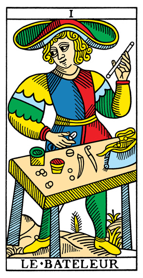
ILe BateleurSang Pesulap
Awal dari segala sesuatu. Bakat, keterampilan, dan peluang baru ada di depan mata — tinggal dimanfaatkan dengan keberanian.
Major ArcanaGaleri · 78 Kartu
Setiap kartu memiliki cerita dan maknanya sendiri. Gunakan tombol penyaring di bawah untuk melihat kelompok kartu tertentu, lalu baca penjelasan singkat pada tiap kartu.

IAwal dari segala sesuatu. Bakat, keterampilan, dan peluang baru ada di depan mata — tinggal dimanfaatkan dengan keberanian.
Major Arcana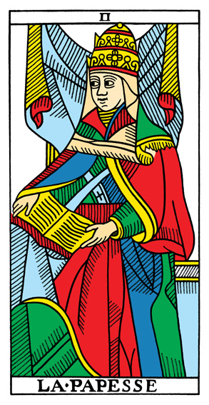
IIPengetahuan yang tersimpan diam-diam, intuisi, dan kesabaran. Tidak semua hal perlu diungkapkan; sebagian cukup dipahami.
Major Arcana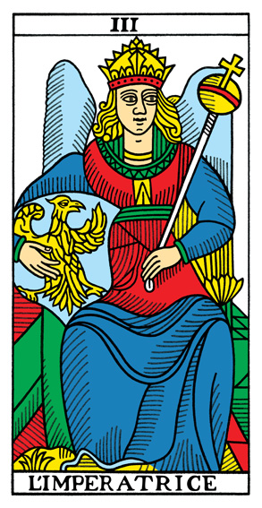
IIIKreativitas, kesuburan, dan pertumbuhan yang penuh kasih. Sesuatu yang dirawat dengan sabar akan berkembang.
Major Arcana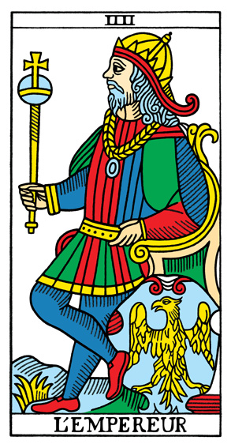
IVStruktur, wewenang, dan disiplin. Kestabilan lahir dari aturan yang jelas dan keputusan yang teguh.
Major Arcana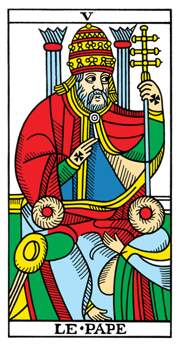
VNasihat bijak, bimbingan, dan tradisi yang menuntun. Terkadang kita perlu mendengar orang yang lebih berpengalaman.
Major Arcana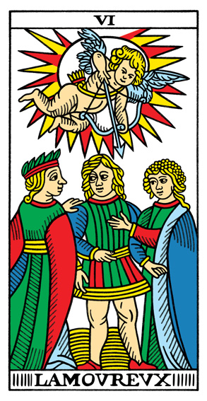
VIPilihan hati dan keraguan antara dua jalan. Cinta menuntut keberanian untuk memilih dengan jujur.
Major Arcana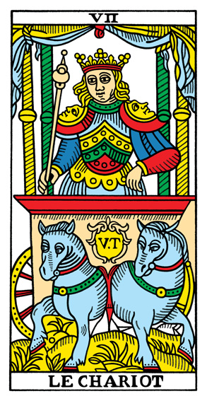
VIIKemenangan melalui tekad dan kendali diri. Arah yang jelas membawa langkah menuju keberhasilan.
Major Arcana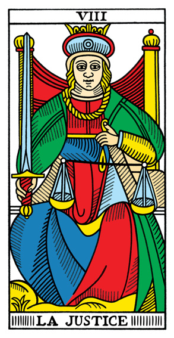
VIIIKeseimbangan, kejujuran, dan konsekuensi dari setiap perbuatan. Keputusan yang adil menuntut pikiran yang jernih.
Major Arcana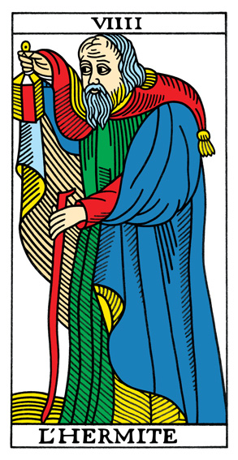
IXIntrospeksi dan pencarian makna dalam kesendirian. Lentera kecil di tangan cukup untuk menerangi langkah berikutnya.
Major Arcana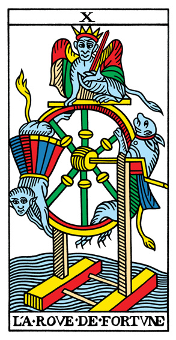
XSiklus hidup yang terus berputar. Perubahan datang tanpa diminta, dan keberuntungan berpihak pada yang siap.
Major Arcana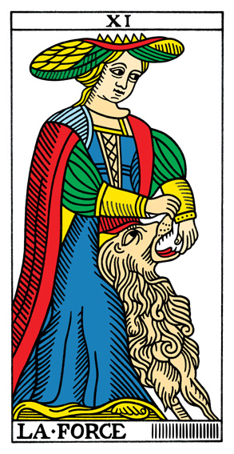
XIKeberanian yang lembut, bukan kekerasan. Kesabaran dan belas kasih mampu menjinakkan dorongan yang paling liar.
Major Arcana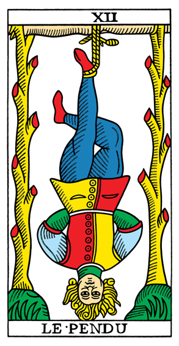
XIIBerhenti sejenak dan melihat dari sudut pandang lain. Kadang kemenangan datang dengan melepaskan, bukan memaksa.
Major Arcana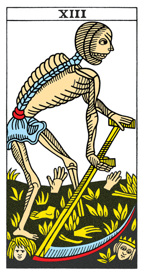
XIIIAkhir dari satu siklus dan awal dari yang lain. Melepaskan masa lalu membuka ruang bagi pertumbuhan baru.
Major Arcana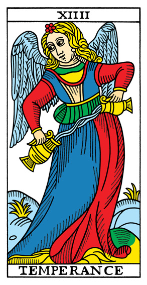
XIVKeseimbangan, takaran yang tepat, dan penyembuhan yang berjalan perlahan. Segala sesuatu indah pada porsinya.
Major Arcana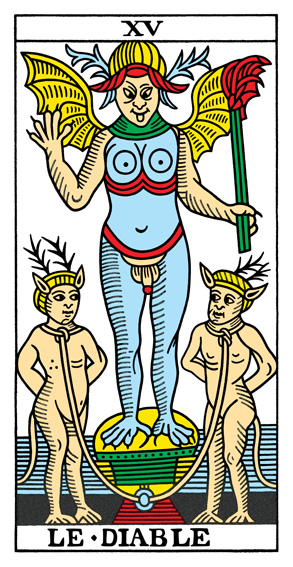
XVGodaan dan keterikatan yang membelenggu. Kesadaran adalah kunci untuk melepaskan diri dari belenggu itu.
Major Arcana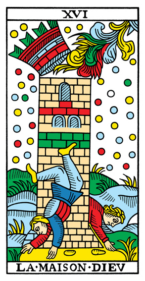
XVIGuncangan yang meruntuhkan sesuatu agar dapat dibangun ulang. Pembaruan sering kali dimulai dari keruntuhan.
Major Arcana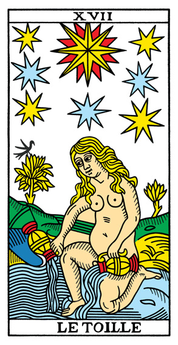
XVIIHarapan dan inspirasi yang memandu di malam gelap. Setelah badai berlalu, selalu ada cahaya untuk dituju.
Major Arcana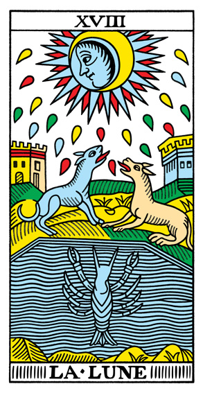
XVIIIIlusi dan isyarat dari alam bawah sadar. Tidak semua yang tampak jelas memang seperti kelihatannya.
Major Arcana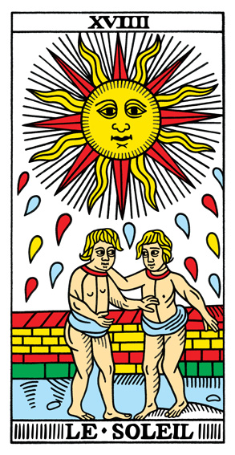
XIXKebahagiaan, kejelasan, dan keberhasilan yang hangat. Energi positif menerangi setiap sudut kehidupan.
Major Arcana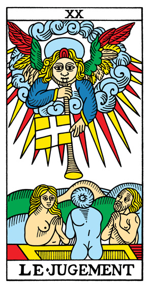
XXKebangkitan dan panggilan jiwa. Saatnya mengevaluasi diri dan memulai babak baru dengan kesadaran penuh.
Major Arcana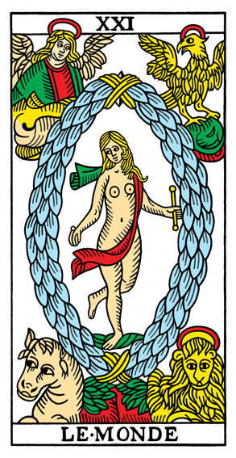
XXIPenyelesaian sebuah perjalanan. Keberhasilan menyeluruh dan rasa syukur atas semua yang telah dilalui.
Major Arcana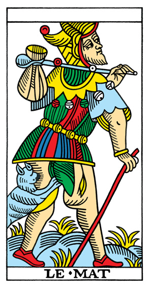
Kebebasan tanpa beban dan awal yang sama sekali baru. Melangkah dengan polos, penasaran, dan tanpa rasa takut.
Major Arcana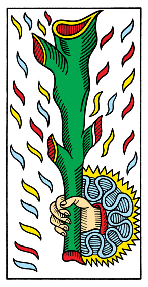
Percikan semangat baru. Ide segar dan dorongan untuk memulai sesuatu yang selama ini ditunda.
Bâtons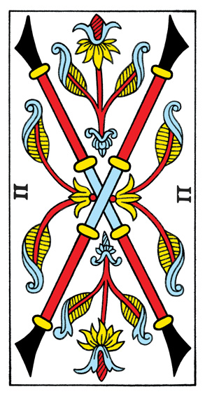
Merancang arah dan menyusun rencana. Dua pilihan jalan terbuka, tinggal menentukan langkah pertama.
Bâtons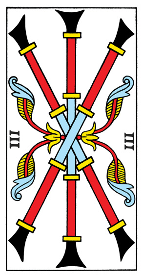
Langkah awal yang mulai berbuah. Kerja sama dan visi yang jelas membuka peluang yang lebih luas.
Bâtons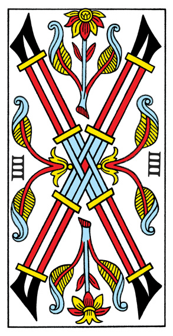
Fondasi yang kokoh dan suasana yang harmonis. Saatnya menikmati hasil kerja sebelum melangkah lagi.
Bâtons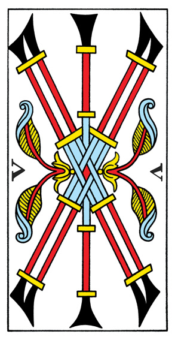
Persaingan dan gesekan pendapat. Perbedaan bisa menjadi sehat bila dijaga dengan sikap sportif.
Bâtons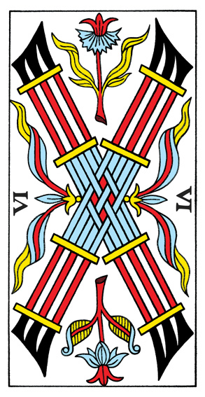
Kemenangan kecil yang layak dirayakan. Usaha yang tekun mulai mendapat pengakuan dari sekitar.
Bâtons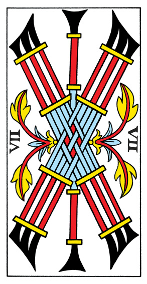
Mempertahankan posisi yang sudah diperjuangkan. Keberanian dibutuhkan saat berada di bawah tekanan.
Bâtons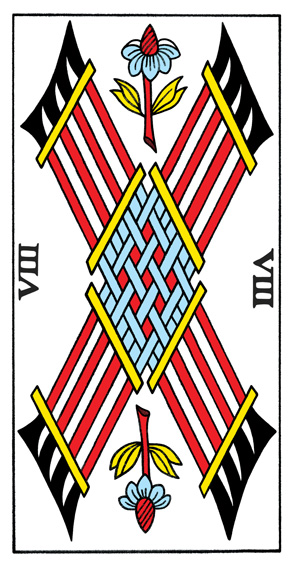
Kemajuan yang bergerak cepat. Kabar baik dan komunikasi lancar mempercepat semua urusan.
Bâtons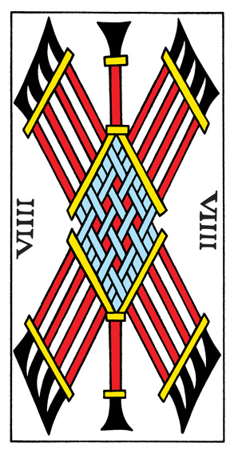
Kewaspadaan menjelang garis akhir. Bekal pengalaman membuat langkah terakhir terasa lebih ringan.
Bâtons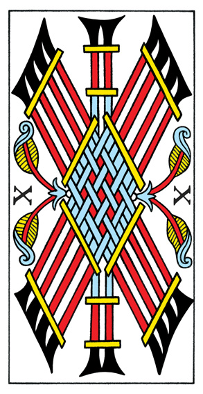
Beban tanggung jawab yang menumpuk. Hampir sampai — jangan menyerah sebelum pekerjaan tuntas.
Bâtons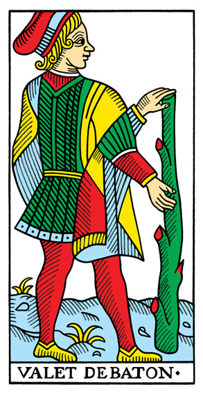
Semangat muda dan rasa ingin tahu. Kabar baik datang bagi yang bersedia belajar hal baru.
Bâtons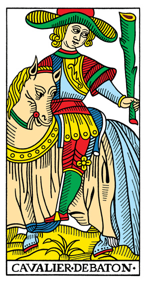
Aksi cepat dan jiwa petualang. Berani bergerak, namun tetap perhatikan arah agar tidak terburu-buru.
Bâtons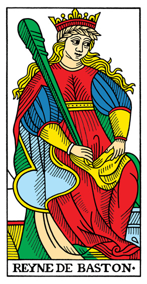
Karisma yang hangat dan kepemimpinan dari hati. Kepercayaan diri menular kepada orang di sekitar.
Bâtons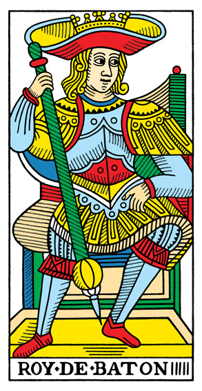
Visi dan wibawa seorang pemimpin. Keputusan yang tegas menggerakkan orang lain untuk ikut melangkah.
Bâtons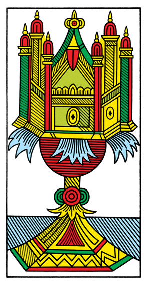
Hati yang terbuka untuk perasaan baru. Awal dari cinta, persahabatan, atau kedamaian batin.
Coupes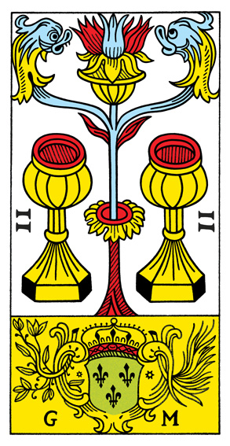
Hubungan yang saling mengisi dan ketertarikan yang tulus. Ada keharmonisan antara dua pihak.
Coupes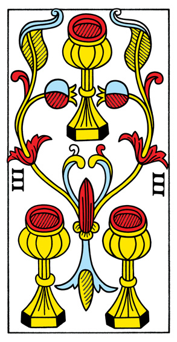
Persahabatan dan perayaan bersama. Dukungan dari orang terdekat membuat beban terasa lebih ringan.
Coupes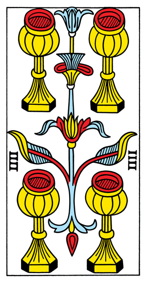
Rasa jenuh atau tawaran yang diabaikan. Sesekali perlu berhenti dan melihat kembali apa yang sudah dimiliki.
Coupes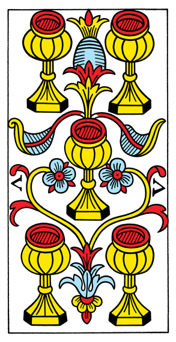
Kekecewaan yang perlu diterima dengan lapang. Di balik kehilangan, masih ada hal berharga yang tersisa.
Coupes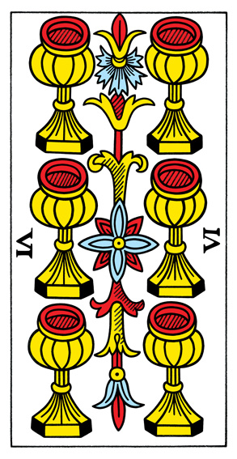
Kenangan manis dan kebaikan dari masa lalu. Nostalgia yang menghangatkan sekaligus mengajarkan sesuatu.
Coupes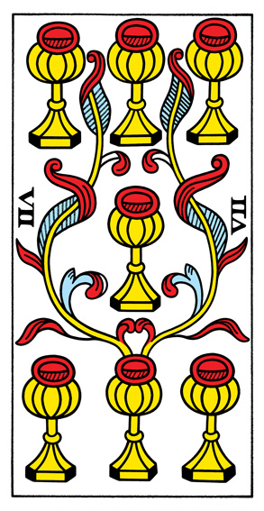
Banyak pilihan dan angan-angan yang perlu disaring. Tidak semua yang berkilau layak dikejar.
Coupes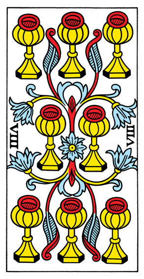
Melangkah pergi demi sesuatu yang lebih bermakna. Keputusan sulit yang membawa kedamaian jangka panjang.
Coupes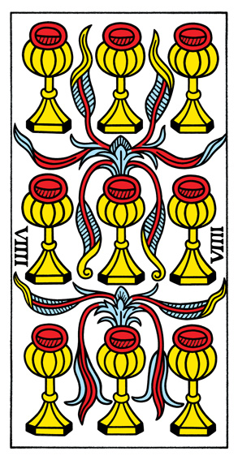
Kepuasan dan rasa syukur. Kebahagiaan sederhana yang cukup untuk membuat hati tenang.
Coupes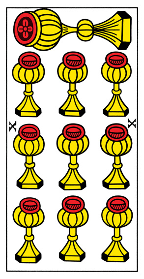
Keharmonisan keluarga dan kebahagiaan yang menyeluruh. Rumah terasa hangat bagi semua yang ada di dalamnya.
Coupes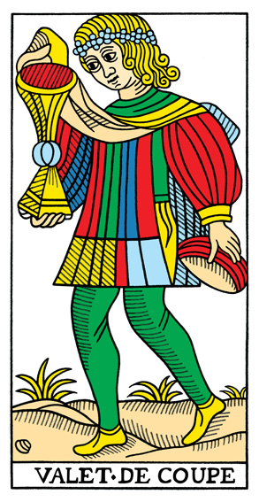
Pesan emosional atau kepekaan yang baru tumbuh. Bunga pertama dari sebuah perasaan yang tulus.
Coupes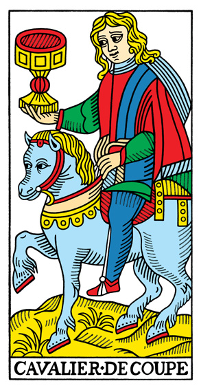
Mengikuti kata hati dan menyampaikan perasaan. Romansa yang manis, meski perlu tetap berpijak pada kenyataan.
Coupes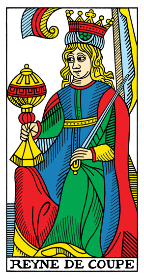
Empati dan intuisi yang dalam. Kelembutan yang menenangkan siapa pun yang berada di dekatnya.
Coupes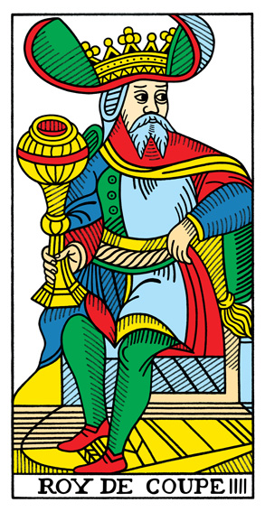
Kedewasaan emosi dan ketenangan hati. Bijak dalam menimbang perasaan, adil dalam bersikap.
CoupesPeluang nyata yang bernilai. Awal dari rezeki, pekerjaan, atau usaha yang menguntungkan.
DeniersMengelola dua hal sekaligus dengan luwes. Keseimbangan antara pekerjaan, studi, dan kehidupan pribadi.
DeniersKerja keras yang mulai berbuah. Keterampilan yang diasah akhirnya mendapat penghargaan.
DeniersKeamanan materi dan kehati-hatian dalam menjaga apa yang dimiliki. Pastikan tidak terlalu menggenggam erat.
DeniersKesulitan materi yang bersifat sementara. Ketahanan dan bantuan dari sekitar menjadi kuncinya.
DeniersMemberi dan menerima dengan seimbang. Bantuan yang datang tepat waktu, atau kesempatan untuk berbagi.
DeniersKesabaran menunggu hasil dari apa yang telah ditanam. Panen membutuhkan waktu, bukan paksaan.
DeniersKetekunan dan perhatian pada detail. Pekerjaan yang dikerjakan dengan rajin menuju hasil yang memuaskan.
DeniersKemandirian dan rasa aman dari hasil usaha sendiri. Saatnya menikmati apa yang sudah diperjuangkan.
DeniersKestabilan jangka panjang dan warisan yang bernilai. Pencapaian yang bisa dinikmati bersama keluarga.
DeniersKesempatan untuk belajar keterampilan baru. Langkah kecil yang bisa menjadi jalan panjang di masa depan.
DeniersKerja tekun dan dapat diandalkan. Kemajuan nyata lebih penting daripada kecepatan semata.
DeniersKemakmuran dan kepraktisan yang penuh kehangatan. Terampil merawat diri, keluarga, dan pekerjaan.
DeniersPenguasaan atas urusan materi dan stabilitas yang mapan. Bijaksana dalam mengelola sumber daya.
DeniersKejelasan pikiran dan kebenaran yang menembus keraguan. Saatnya mengambil keputusan dengan tegas.
ÉpéesKebimbangan antara dua sisi. Menimbang dengan tenang lebih baik daripada memutuskan dengan tergesa.
ÉpéesLuka hati atau kata-kata yang menyakitkan. Rasa sakit ini perlu diakui sebelum bisa disembuhkan.
ÉpéesWaktunya beristirahat dan memulihkan diri. Jeda yang tenang membuat pikiran kembali jernih.
ÉpéesKonflik dan kemenangan yang terasa pahit. Menang dengan cara yang tepat lebih penting daripada menang saja.
ÉpéesPerjalanan menjauh dari masalah menuju air yang lebih tenang. Transisi kecil yang membawa kelegaan.
ÉpéesStrategi dan kecerdikan dalam menghadapi situasi rumit. Berhati-hatilah terhadap niat yang ambigu.
ÉpéesPerasaan terbelenggu oleh pikiran sendiri. Belenggu itu nyata, tetapi kuncinya tetap ada di tangan kita.
ÉpéesKecemasan yang mengganggu tidur dan membayangi pagi. Bicarakan dengan berani; beban akan terasa lebih ringan.
ÉpéesAkhir dari masa sulit. Titik terendah sering kali menjadi titik balik menuju keadaan yang lebih baik.
ÉpéesRasa ingin tahu dan informasi baru yang perlu disikapi dengan kewaspadaan. Tanyakan sebelum memercayai.
ÉpéesKeberanian untuk menghadapi tantangan secara langsung. Kecepatan bertindak diimbangi pikiran yang tajam.
ÉpéesLogika yang tajam dan kejujuran yang tidak diragukan. Mandiri dalam berpikir, adil dalam menilai.
ÉpéesOtoritas akal budi dan nasihat yang strategis. Bijaksana mengambil keputusan, tegas menjalankannya.
Épées